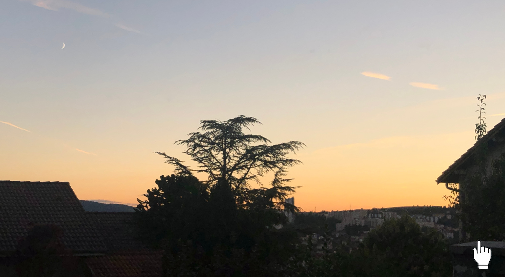
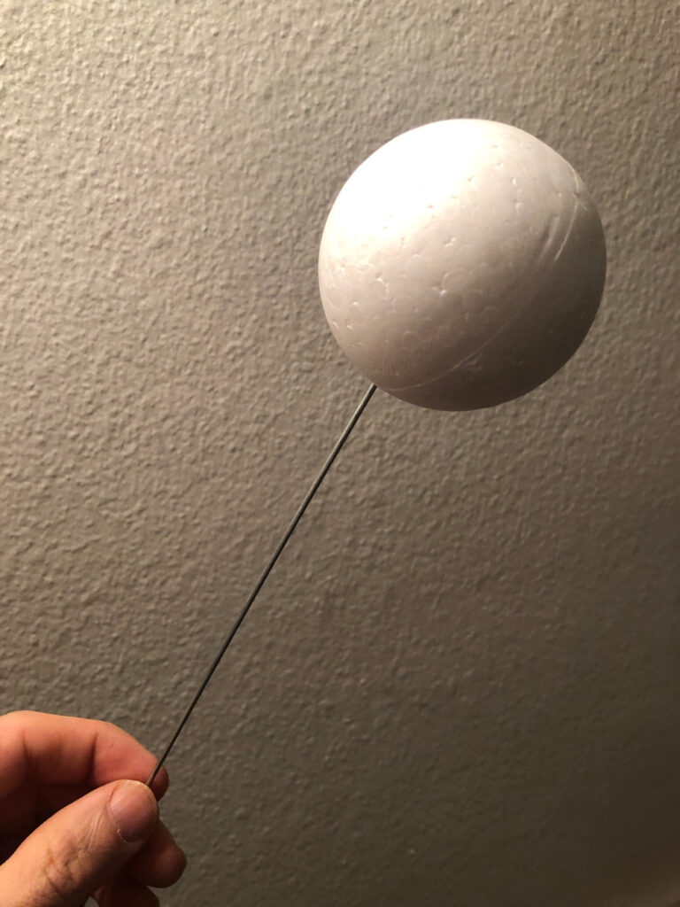
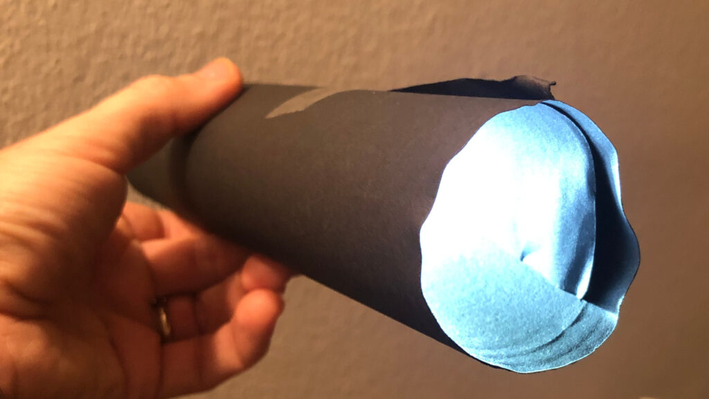
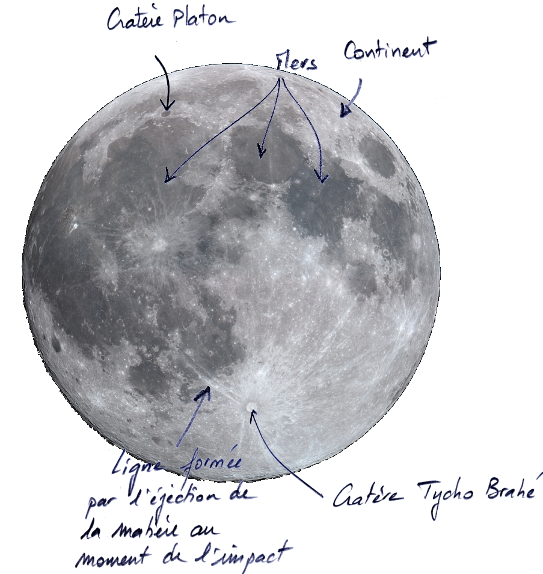

La Lune est revenue dans l’actualité scientifique, après que la sonde indienne Chandrayaan-3 s’est posée le 23 août 2023 au pôle sud lunaire.
La Lune est un astre particulier pour l’humanité : proche de la Terre, elle est à l’origine des marées, facilement observable elle est l’objet de calendriers lunaires.
Contrairement à la plupart des autres astres visibles depuis la Terre, la Lune nous apparaît différente chaque jour : tantôt pleine, en croissant, ou complètement éteinte lors de la nouvelle Lune.
Photographie d’un coucher de Soleil à Saint-Etienne, montrant que la partie éclairée de la Lune est dirigée vers le Soleil :

Cette lumière n’est pas produite par l’astre lui-même…seules les étoiles en sont capables. Il ne s’agit, dans le cas de la Lune, que des rayons du soleil qui sont réfléchis à sa surface. En pleine Lune, on voit toute la surface éclairée ; en croissant, on n’en voit qu’une partie, l’autre n’étant pas dirigée vers le soleil, et donc obscure. La frontière entre les zones éclairée et obscure est arquée, puisque la Lune est sphérique.
On peut s’amuser à modéliser ces changements d’ « éclairage solaire » : prenons une boule de polystyrène placée au bout d’une tige métallique et un tube au bout duquel on place une lampe :


En faisant le noir dans la pièce, on peut visualiser la manière dont la boule est éclairée par la lampe. On retrouve exactement les formes en croissant typiques de la Lune. Voici par exemple une séquence en vidéo, montrant les différentes phases entre 2 pleines Lunes :
Comment expliquer ces changements d’éclairage de la Lune ?
C’est que tout est en mouvement…D’abord, la Terre tourne sur elle-même, ce qui fait qu’on voit la Lune se déplacer dans le ciel au cours de la nuit (et de la journée ! ). Ensuite, la Lune tourne autour de la Terre, ce qui fait que la zone éclairée change au cours du temps.

La Lune est un satellite : elle a une trajectoire elliptique autour de la Terre, comme les satellites artificiels que l’Homme envoie dans l’espace. Pour la Lune, la rotation dure environ 28 jours.
Petit calcul simple et rapide… à quelle vitesse se déplace-t-elle par rapport à la Terre ?
On peut assez facilement calculer la vitesse de cette rotation. Elle tourne en 27,3 jours autour de la Terre. Elle est située à 380 000 km de la Terre. Si vous vous rappelez la formule de calcul du périmètre, 2Pi.R, la distance parcourue par la Lune se calcule facilement : 2.Pi.380 000 = = 2,4 millions de km. Soit environ 87 000km par jour, ou 3640 km/h !
On a pu constater que la distance entre la Terre et la Lune augmente de 3 à 5 cm chaque année. Cela est lié au phénomène des marées. Cet éloignement entraîne son accélération…un jour, la Terre « perdra » la Lune, dont la vitesse sera si grande que la force d’attraction gravitationnelle de la Terre sera insuffisante pour la retenir !
Pourquoi la Lune tourne autour de la Terre ?
Pour comprendre pourquoi ça tourne, on peut imaginer disposer d’un canon. Si vous lancez un boulet, il tombe un peu plus loin. Si vous le lancez plus fort, il tombe encore plus loin.
Si on le lance très très très fort, il va toujours tomber, mais comme la Terre est ronde, il n’atterrira jamais : il tournera autour de la Terre, comme un satellite. Si on le lançait encore plus fort, il partirait dans l’espace, sans jamais retomber. Il s’extrairait de l’attraction de la Terre.
En fait la rotation d’un satellite autour de la Terre est un équilibre permanent entre une chute vers la Terre due à la gravité, et une vitesse qui l’expulse vers l’espace. Donc si la lune ne tournait pas autour de la Terre, elle s’écraserait dessus !
Comment la vitesse de rotation a-t-elle été acquise ?
On pense que la lune provient d’une collision entre la Terre et une protoplanète. L’énergie du choc a propulsé la matière autour de la Terre, qui s’est mise en rotation. Ce scénario est une théorie ; Il y en a d’autres. Mais c’est l’explication actuelle qui rend compte au mieux des faits scientifiques accumulés. C’est toujours comme ça en science, on accumule des faits, qui nous permettent de constituer une théorie explicative. Tant que la théorie n’est pas réfutée, elle est retenue.
Jusqu’aux missions Apollo, on ne savait pas grand chose. Il a fallu aller sur la Lune pour récolter des échantillons, et découvrir que la Lune a une structure très proche de celle de la Terre. Ces « pierres de Lune » sont des roches proches de celles que l’on rencontre sur Terre, riches en plagioclases. Au niveau des « mers », la roche s’apparente au basalte, courant dans les fonds océaniques terrestres, où les régions volcaniques comme la chaîne des Puys, pas loin de chez nous…Ces roches sont formées par le refroidissement d’un magma au cours du temps. Démontrant que la Lune a été au moins partiellement liquide, il y a bien longtemps.
La sphéricité de la Lune provient aussi de cet état déformable
Pour comprendre la sphéricité de la Lune, on peut se rappeler du whisky du capitaine Haddock dans « On a marché sur la Lune » : lorsque les passagers de la fusée passent en état d’apesanteur, le whisky sort du verre…et prend la forme d’une boule ! C’est dû à l’attraction des particules de whisky les unes sur les autres, elles s’agrègent, formant une boule. La lune, comme la plupart des corps de l’univers sont soumis à cette même force de gravité.
Au moment de leur formation, tous ces corps étaient constitués de particules en suspension dans l’univers, qui s’attirant mutuellement on formé un corps plus gros. L’état final a donné une boule. C’est pour cela que toutes les planètes sont sphériques.
Et si on était dans la Lune, qu’est-ce qu’on verrait ?
Plus en profondeur, impossible d’échantillonner. Comment dès lors, connaître la composition profonde de la Lune ? Comme sur Terre, on peut avoir recours à des techniques indirectes :
- la vitesse de rotation de la Lune renseigne sur sa masse. Comme les roches de surface sont peu denses (environ 3 x celle de l’eau) et que la densité moyenne donnée par la gravitation est supérieure on déduit qu’il doit y avoir un noyau plus dense, riche en un élément lourd : le fer et le nickel, probablement.
- la Lune présente quelques séismes, sans doute liés à sa déformation par l’attraction gravitationnelle de la Terre (un peu comme les marées). L’étude de ces séismes (la profondeur de leur foyer, leur vitesse de propagation…) permet de déduire une organisation profondes en couches concentriques, avec un noyau riche en Fer, un manteau périphérique, et une croûte. Comme sur Terre ! Des analyses complémentaires ont même montré que la partie externe du noyau est liquide. Là aussi comme sur Terre…
Et pourtant, en surface, la Lune semble bien différente de la Terre !
Si on regarde la Lune à l’oeil nu, on repère très bien des parties claires (nommés « continents ») et des parties sombres (nommées « mers »). En fait, il ne s’agit pas de continents et d’océans comme sur la Terre ! Les parties claires sont bien l’analogie de nos continents, mais les parties sombres sont formées de basaltes, il n’y a pas d’eau ! Elles ont été formées au début de l’histoire de la Lune, par refroidissement de magma. Un peu comme la croûte océanique terrestre d’ailleurs.
Si on a des yeux de lynx, on peut arriver à voir quelques cratères. Et même des lignes partant de ces cratères, indiquant la direction de projection de la matière au moment de l’impact. Ceci indique qu’il ne s’agit pas de cratères volcaniques, mais de cratères d’impacts, issus d’astéroïdes ou de comètes qui ont percuté la Lune. Ces impacts se sont formés pour la majorité peu après la formation de la Lune, il y a plus de 4 milliards d’années.

D’ailleurs, vous avez peut-être remarqué qu’on voit toujours la même surface de la Lune : les mêmes cratères, les mêmes tâches sombres ou claires. C’est que la Lune nous montre toujours la même face : elle tourne sur elle-même, au même rythme qu’elle nous tourne autour…
Pourquoi la Lune a-t-elle tant de cratères, et pas la Terre ?
Il y a beaucoup de cratères d’impacts sur la Lune, beaucoup plus que sur Terre. C’est lié à deux phénomènes :
- l’absence d’atmosphère, qui sur Terre gomme les reliefs, et efface les traces : c’est l’érosion
- l’absence de tectonique des plaques : sur Terre, il y avait sans doute également bcp de cratères d’impact. Mais ils ont disparu par plongement de la lithosphère au niveau des zones de subduction.
La lune est donc telle qu’elle a été formée il y a 4,5 Ga (Giga-années = 109 années) ! Ce qui est très intéressant pour comprendre les conditions de formation ! Et par là même, d’en déduire les conditions de formation de la Terre.
Une des différences majeures est l’absence d’eau sur la Lune !
Différents travaux scientifiques ont démontré la présence d’eau solide (glace) aux pôles, en particulier au pôle Sud lunaire. C’est justement là que la sonde Indienne s’est posée…
Pourquoi donc l’eau est-elle présente au pôle Sud, et pas ailleurs ? Les pôles reçoivent moins d’énergie solaire, à cause de son orientation par rapport aux rayons lumineux. C’est comme quand on installe un panneau solaire : on le dirige de telle manière à ce qu’il « regarde » le soleil : les rayons frappent ainsi la surface perpendiculairement, ce qui permet de récupérer le maximum d’énergie. Si on mettait le panneau solaire parallèlement au rayon, on ne capterait rien, ou pas grand chose. C’est ce qui se passe aux pôles lunaires (et terrestres aussi bien sûr). Du coup, les pôles sont des zones beaucoup plus froides que le reste !

Aux pôles, la surface lunaire fait un angle avec la direction des rayons, entraînant une répartition de l’énergie solaire incidente sur une plus grande surface, qui chauffe moins rapidement.
Au soleil, il peut faire plus de 100°C sur la Lune ! Dans les zones d’ombre permanente, comme sur les bords de cratères d’impact, il peut faire -200°C en permanence ! A ces endroits, l’eau peut donc rester sous forme de glace.
Les américains ont fait un truc fou en 2009. Ils ont envoyé une sonde de 2t, (nommée LCROSS), qui est venue percuter la surface lunaire à grande vitesse, au niveau d’une zone toujours à l’ombre. Un impact qui a éjecté de la matière lunaire. On a mesuré la composition de l’éjectat : plus de 100kg d’eau (soit 5% de la matière éjectée) a été détectée. Il y a donc très probablement de l’eau dans ces zones polaires.
Pourquoi s’intéresser tellement à l’eau…
- cette eau est directement en provenance des comètes et astéroïdes L’étudier, revient à étudier les conditions de formation de l’eau sur Terre. C’est donc intéressant pour mieux comprendre l’origine de la formation de l’eau sur Terre.
- Si l’eau est présente en quantité suffisante, elle peut être utilisée pour ravitailler des équipes qui resteraient plusieurs jours en mission sur la Lune. Dans votre sac à dos de randonnée, c’est bien l’eau qui pèse le plus ! Quand on voit le poids de l’eau…c’est de sacrées économies de carburant !
- L’eau peut aussi servir de carburant ! Avec de l’eau, on peut faire de l’hydrogène (il y a 2 hydrogènes H dans la molécule d’eau, H2O). Si les moteurs à hydrogène progressent, avoir de l’eau sur la Lune permettrait d’imaginer lancer des missions vers Mars depuis la Lune. La gravité étant plus faible sur la Lune que sur Terre, cela demanderait beaucoup moins de carburant que sur Terre. Mais cela est encore très hypothétique…beaucoup de progrès sont nécessaires avant !
Pour en savoir plus…
- …À propos de la composition interne (noyau et manteau) : About the lunar solid inner core and the mantle overturn. Arthur Briaud, Clément Ganino, Agnès Fienga, Anthony Mémin et Nicolas Rambaux. Nature, le 3 mai 2023. DOI :10.1038/s41586-023-05935-7
- …À propos de la perception de la Lune selon la latitude ou l’hémisphère d’observation : https://planet-terre.ens-lyon.fr/ressource/observation-cycle-Lune.xml
- …À propos des modèles de formation de la Lune : https://planet-terre.ens-lyon.fr/ressource/origine-Lune.xml